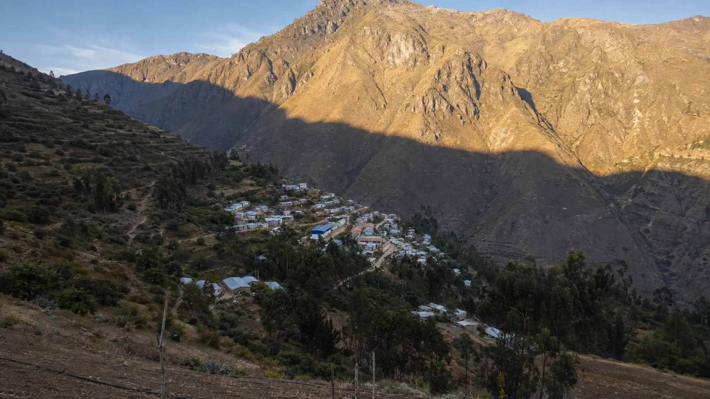

Eje 1Desarrollo sostenible
Movimiento Independiente Visión al Desarrollo
WILSON HUERTA AMBROCIO
Candidato a la Alcaldía del Centro Poblado de Chacchan
Juntos construimos el desarrollo de Chacchan
Chacchan · Pariacoto · Áncash

Nuestra tierraCHACCHAN
Una comunidad con historia y futuro
Eje 2Trabajo con la gente
Eje 3Infraestructura y servicios
Compromisos concretos
Propuestas para hacer avanzar a Chacchan
Seis prioridades pensadas desde las necesidades de nuestras familias, caseríos, agricultores, estudiantes y jóvenes.
01
Sistema de riego
Mejoraremos el sistema de riego para fortalecer la agricultura y aprovechar mejor el agua.
02
Mejores carreteras
Gestionaremos el mejoramiento de las carreteras y los accesos de nuestra comunidad.
03
Bibliotecas escolares
Equiparemos las bibliotecas escolares con recursos que ayuden a nuestros estudiantes.
04
Prevención de desastres
Trabajaremos en prevención y respuesta para estar preparados ante los desastres naturales.
05
Agua y desagüe
Gestionaremos proyectos de agua y desagüe para los caseríos que aún los necesitan.
06
Deporte para todos
Promoveremos el deporte mediante un fondo común y actividades para niños y jóvenes.
Chacchan, nuestro hogar
Wilson Huerta Ambrocio
Una gestión cercana, transparente y comprometida
Creo en una autoridad que escuche, gestione y trabaje junto al pueblo. Nuestro compromiso es atender las necesidades más urgentes y construir oportunidades para todas las familias de Chacchan.
- ✓ Escuchar a cada caserío y comunidad
- ✓ Informar con claridad sobre cada gestión
- ✓ Trabajar con participación de los vecinos
Conversemos sobre el futuro de Chacchan